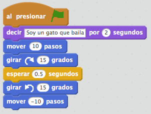
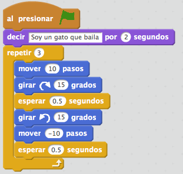
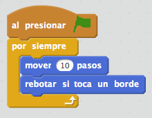

{% trans "Instructions related to algorithmic notions of flow control can help you to control the behavior of your characters, making, for example, certain blocks that are repeated a number of times, or until a situation arises." %}
{% trans "If you get 0 points..." %}
{% trans "The most basic way to control the behavior of your characters is creating a program composed of a set of blocks are executed one after another, as we see in the picture:" %}

{% trans "How does this program works? When the user click on the green flag run behind one another all blocks that have been included in the program. Start with the first block 'say I'm a cat dancing for 2 seconds', then run 'move 10 steps' then 'turn 15 degrees right', and so on to the last block of the program." %}
{% trans "If you get 1 point..." %}
{% trans "Sometimes when we want a set of blocks is constantly repeated, instead of repeating the same blocks over and over again, you can use a repeat instruction allowing achieve the same effect, but more comfortable and manageable way. Consider a couple of examples:" %}

{% trans "How these control blocks works?" %}
{% trans "In the block 'repeat' when execution reaches this point is repeated as often as has been indicated in the parameter block 'repeat', in the example would be 3 times, all blocks included within this block. We can see that the block 'repeat' has an arrow at the bottom indicating that when they finish executing the blocks back again up." %}
{% trans "The block 'forever' works like the 'repeat' but never finish executing the blocks containing in its interior." %}
{% trans "If you get 2 points..." %}
{% trans "Sometimes we don't know previously the number of times you want a set of blocks is executed, as this depends on a given situation. In these cases, the block 'repeat until ...' is really useful. Here's an example:" %}

{% trans "In the example, the character will constantly repeat the instruction 'say You don't caught me...' while he don't touch the enemy. At the time that the condition is met instruction 'repeat until ...', the contents inside will finish run and will jump to the next instruction, in this case 'say You caught me!'." %}